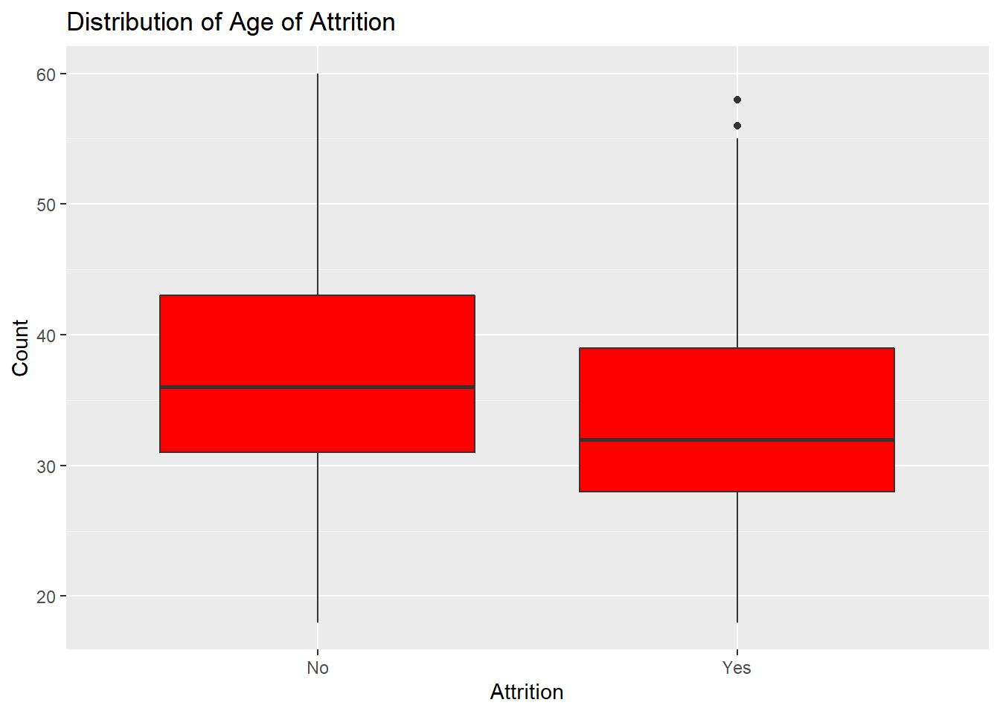
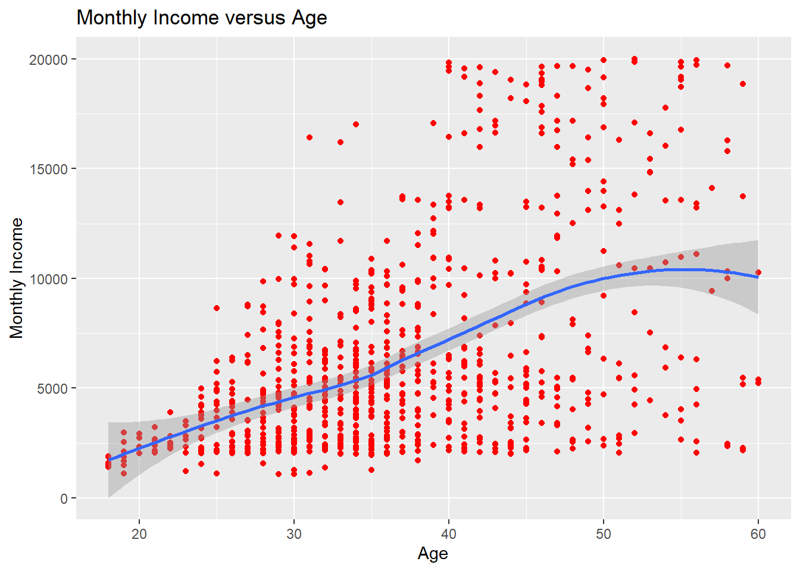
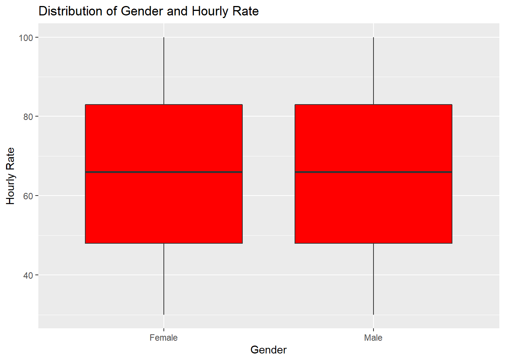
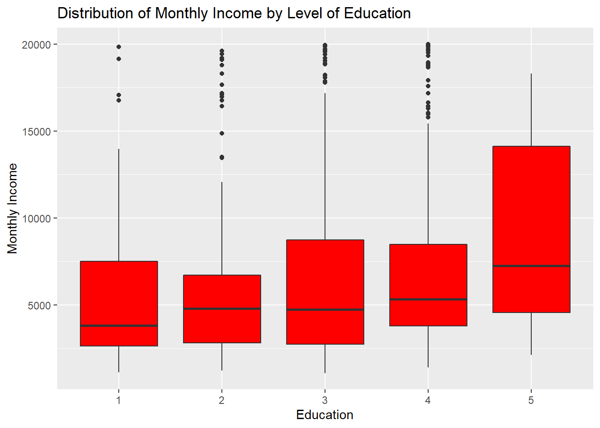
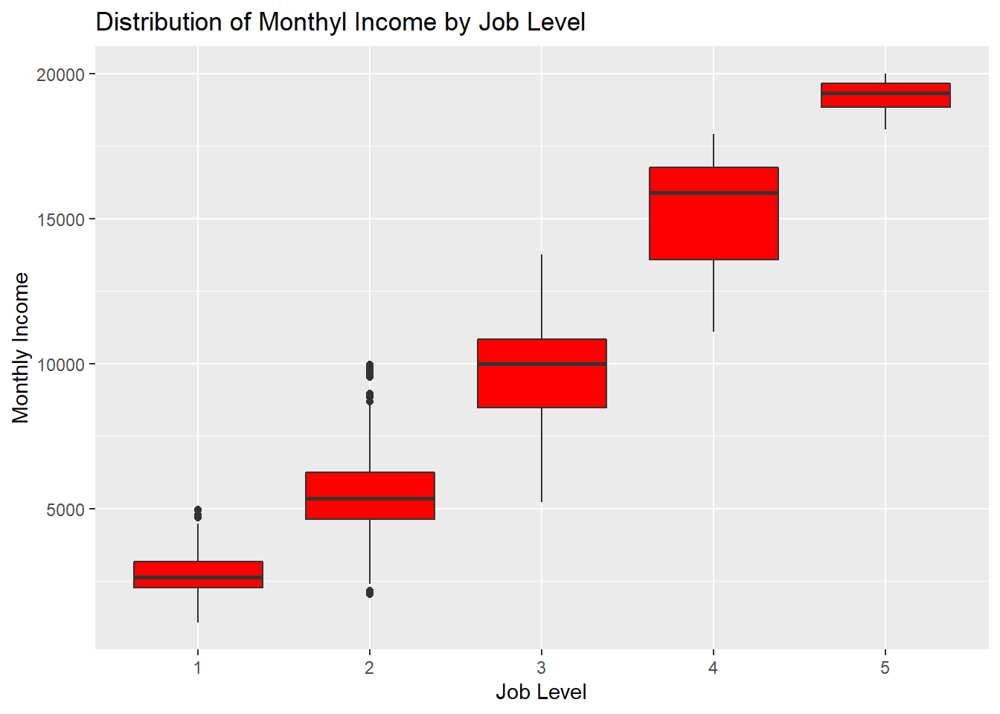
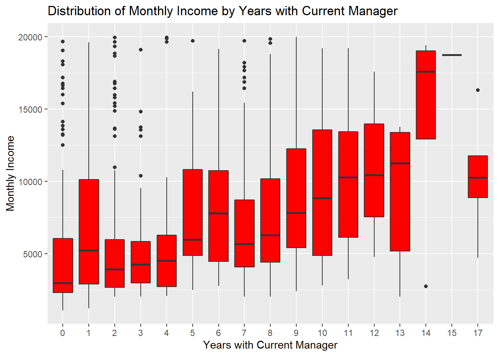

DS6306-CaseStudy2
Shelby Provost
8/4/2021
Executive Summary
DDSAnalytics would like to predict employee turnover for Frito Lay employees. Given an existing data set with 32 potential predictor variables for attrition, a brief analysis was conducted. Interesting insights, job specific trends, a model for predicting attrition, and a model for predicting salary were obtained from this data.
Importing the Data Set
Exploring the data
## No Yes
## 730 140## [1] 0.8390805 Exploring the data generally, we see that there are a few interesting observations about the data. First, there are 730 employees retained and 140 employees lost. This creates a retention rate of 83.9%. Also, the age of attrition appears to be lower than the age of retention. There does not appear to be a linear relationship between the age of an employee and their monthly income. There also does not appear to be a difference in the hourly income by gender.
Exploring Job Specific Trends


## JobRole countTot NumAttrition NumRetention PercentAttrition PercentRetention
## 1 Healthcare Representative 76 8 68 10.526316 89.47368
## 2 Human Resources 27 6 21 22.222222 77.77778
## 3 Laboratory Technician 153 30 123 19.607843 80.39216
## 4 Manager 51 4 47 7.843137 92.15686
## 5 Manufacturing Director 87 2 85 2.298851 97.70115
## 6 Research Director 51 1 50 1.960784 98.03922
## 7 Research Scientist 172 32 140 18.604651 81.39535
## 8 Sales Executive 200 33 167 16.500000 83.50000
## 9 Sales Representative 53 24 29 45.283019 54.71698
 Exploring job role specific trends, we find that Managers have the highest average hourly rate while human resources have the lowest. Health Care representatives have the highest average job satisfaction while research directors have the lowest. Human resources have the highest average relationship satisfaction with their managers while research directors have the lowest. Managers have the highest average number of years with the company while sales representatives have the lowest. Which is unsurprising that we find that sales representatives have the highest attrition rate. Research directors have the highest retention rate which may seem odd as we found that research directors have the lowest average job satisfaction and the lowest average relationship satisfaction with their managers. It is also interesting that we found that human resource employees have the highest relationship satisfaction with their managers as they also have the lowest average hourly rate. Nonetheless, these relationships show insights into the reasons employees may choose to stay with the company or leave.
Exploring job role specific trends, we find that Managers have the highest average hourly rate while human resources have the lowest. Health Care representatives have the highest average job satisfaction while research directors have the lowest. Human resources have the highest average relationship satisfaction with their managers while research directors have the lowest. Managers have the highest average number of years with the company while sales representatives have the lowest. Which is unsurprising that we find that sales representatives have the highest attrition rate. Research directors have the highest retention rate which may seem odd as we found that research directors have the lowest average job satisfaction and the lowest average relationship satisfaction with their managers. It is also interesting that we found that human resource employees have the highest relationship satisfaction with their managers as they also have the lowest average hourly rate. Nonetheless, these relationships show insights into the reasons employees may choose to stay with the company or leave.
Creating the Best Models
## Confusion Matrix and Statistics
##
##
## No Yes
## No 640 51
## Yes 90 89
##
## Accuracy : 0.8379
## 95% CI : (0.8117, 0.8618)
## No Information Rate : 0.8391
## P-Value [Acc > NIR] : 0.559069
##
## Kappa : 0.4606
##
## Mcnemar's Test P-Value : 0.001373
##
## Sensitivity : 0.8767
## Specificity : 0.6357
## Pos Pred Value : 0.9262
## Neg Pred Value : 0.4972
## Prevalence : 0.8391
## Detection Rate : 0.7356
## Detection Prevalence : 0.7943
## Balanced Accuracy : 0.7562
##
## 'Positive' Class : No
## ## Confusion Matrix and Statistics
##
##
## No Yes
## No 638 52
## Yes 92 88
##
## Accuracy : 0.8345
## 95% CI : (0.8081, 0.8586)
## No Information Rate : 0.8391
## P-Value [Acc > NIR] : 0.664134
##
## Kappa : 0.4505
##
## Mcnemar's Test P-Value : 0.001154
##
## Sensitivity : 0.8740
## Specificity : 0.6286
## Pos Pred Value : 0.9246
## Neg Pred Value : 0.4889
## Prevalence : 0.8391
## Detection Rate : 0.7333
## Detection Prevalence : 0.7931
## Balanced Accuracy : 0.7513
##
## 'Positive' Class : No
## 
##
## Call:
## lm(formula = MonthlyIncome ~ Education + JobLevel + YearsWithCurrManager,
## data = CaseStudy2.data)
##
## Residuals:
## Min 1Q Median 3Q Max
## -5008.8 -933.4 63.8 712.0 3777.3
##
## Coefficients:
## Estimate Std. Error t value Pr(>|t|)
## (Intercept) -1791.10 162.25 -11.039 <2e-16 ***
## Education 18.35 47.24 0.389 0.6977
## JobLevel 4048.07 47.47 85.283 <2e-16 ***
## YearsWithCurrManager -30.49 14.41 -2.116 0.0346 *
## ---
## Signif. codes: 0 '***' 0.001 '**' 0.01 '*' 0.05 '.' 0.1 ' ' 1
##
## Residual standard error: 1411 on 866 degrees of freedom
## Multiple R-squared: 0.9061, Adjusted R-squared: 0.9058
## F-statistic: 2786 on 3 and 866 DF, p-value: < 2.2e-16